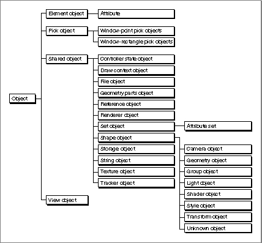
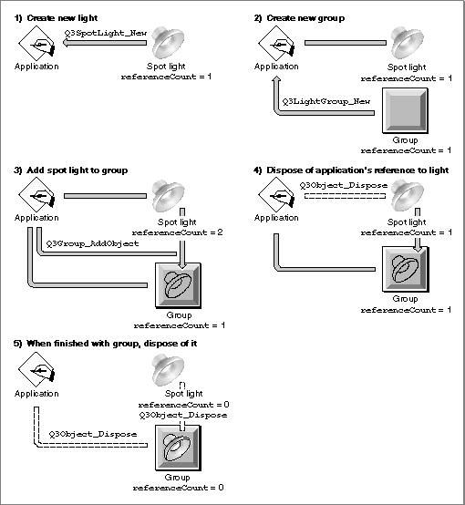

About QuickDraw 3D Objects
QuickDraw 3D is object oriented in the sense that many of QuickDraw 3D's capabilities (introduced in the previous sections) are accessed by creating and manipulating QuickDraw 3D objects. A QuickDraw 3D object is an instance of a QuickDraw 3D class, which defines a data structure and a behavior for objects in the class. The behavior of a QuickDraw 3D object is determined
by the set of methods associated with the object's class. In other words, a QuickDraw 3D object is a set of data defining the specific characteristics of
the object and a set of methods defining the behaviors of the object.In keeping with QuickDraw 3D's object orientation, QuickDraw 3D objects are opaque (or private): the structure of the object's data and the implementation of the object's methods are not publicly defined. QuickDraw 3D provides routines that you can use to modify some of an object's private data or to have an object act upon itself using a class method.
- Note
- Currently, only C language interfaces are available for creating and manipulating QuickDraw 3D objects.

The QuickDraw 3D Class Hierarchy
All QuickDraw 3D classes are arranged in the QuickDraw 3D class hierarchy, a hierarchical structure that provides for inheritance and overriding of class data and methods. Any particular class in the QuickDraw 3D class hierarchy can be a parent class, a child class, or both. A parent class is a class that is immediately above some other class in the class hierarchy. A child class is a class that has a parent. A child class that has no children is a leaf class. Figure 3-1 illustrates the top levels of the QuickDraw 3D class hierarchy.Figure 3-1 The top levels of the QuickDraw 3D class hierarchy

A child class can either inherit or override the data and methods of its parent class. By default, a child class inherits data and methods from its parent (that is, the data and methods of the parent also apply to the child). Occasionally, the child class overrides the data or methods of its parent (that is, it defines data or methods to replace those of the parent class).
- Note
- Figure 3-1 does not show the entire
QuickDraw 3D class hierarchy.The following sections briefly describe the classes and subclasses of the QuickDraw 3D class hierarchy. You can find complete information on these classes in the remainder of this book.
QuickDraw 3D Objects
At the very top of the QuickDraw 3D class hierarchy is the common root of all QuickDraw 3D objects, the classTQ3Object.typedef struct TQ3ObjectPrivate *TQ3Object;TheTQ3Objectclass provides methods for all its members, including dispose, duplicate, draw, and file I/O methods. For example, you dispose of any QuickDraw 3D object by calling the functionQ3Object_Dispose. Similarly, you can duplicate any QuickDraw 3D object by callingQ3Object_Duplicate. It's important to understand that the methods defined at the root level of the QuickDraw 3D class hierarchy may be applied to any object in the class hierarchy, regardless of how far removed from the root level it may be. For instance, if the variablemySpotLightcontains a reference to a spot light, then the codeQ3Object_Dispose(mySpotLight)disposes of that light.The methods defined for all QuickDraw 3D objects begin with the prefix
- Note
- Actually, using
Q3Object_Disposeto dispose of a spot light simply reduces the light's reference count by 1. (This is because a light is a type of shared object.) The light is not disposed of until its reference count falls to 0. See "Reference Counts" on page 3-11 for complete details on reference counts.Q3Object. Here are the root level methods defined for all objects:Q3Object_Dispose Q3Object_Duplicate Q3Object_Submit Q3Object_IsDrawable Q3Object_GetType Q3Object_GetLeafType Q3Object_IsTypeYou'll use theQ3Object_GetType,Q3Object_GetLeafType, andQ3Object_IsTypefunctions to determine the type or leaf type of an object.
See "Determining the Type of a QuickDraw 3D Object" on page 3-14 for
further information about object types and leaf types.You'll use the
Q3Object_Submitfunction to submit a QuickDraw 3D object for various operations. To submit an object is to make an object eligible for rendering, picking, writing, or bounding box or sphere calculation. Submission is always done in a loop, known as a submitting loop. For example, you submit an object for rendering by calling theQ3Object_Submitfunction inside of a submitting loop. See "Rendering a Model" on page 1-30 for complete information on submitting loops.QuickDraw 3D Object Subclasses
There are four subclasses of theTQ3Objectclass: shared objects, element objects, view objects, and pick objects.typedef TQ3Object TQ3ElementObject; typedef TQ3Object TQ3PickObject; typedef TQ3Object TQ3SharedObject; typedef TQ3Object TQ3ViewObject;An element object (or, more briefly, an element) is any QuickDraw 3D
object that can be part of a set. Elements are not shared and hence have no reference count; they are always removed from memory whenever they are disposed of. Element objects are stored in sets (objects of typeTQ3SetObject), which generally store such information as colors, positions, or application-
defined data.A pick object (or, more briefly, a pick) is a QuickDraw 3D object that is used to specify and return information related to picking (that is, selecting objects in a model that are close to a specified geometric object). In general, you'll use pick objects to retrieve data about objects selected by the user in a view.
A shared object is a QuickDraw 3D object that may be referenced by many objects or the application at the same time. For example, a particular renderer can be associated with several views. Similarly, a single pixmap can be used as a texture for several different objects in a model. The
TQ3SharedObjectclass overrides the dispose method of theTQ3Objectclass by using a reference count to keep track of the number of times an object is being shared. When a shared object is referred to by some other object (for example, when a renderer is associated with a view), the reference count is incremented, and whenever a shared object is disposed of, the reference count is decremented. A shared object is not removed from memory until its reference count falls to 0.A view object (or more briefly, a view) is a type of QuickDraw 3D object used to collect state information that controls the appearance and position of objects at the time of rendering. A view binds together geometric objects in a model and other drawable QuickDraw 3D objects to produce a coherent image. A view is essentially a collection of a single camera, a (possibly empty) group of lights, a draw context, a renderer, styles, and attributes.
- Note
- For more information on reference counts,
see "Reference Counts" on page 3-11.Shared Object Subclasses
There are many subclasses of theTQ3SharedObjectclass.typedef TQ3SharedObject TQ3ControllerStateObject; typedef TQ3SharedObject TQ3DrawContextObject; typedef TQ3SharedObject TQ3FileObject; typedef TQ3SharedObject TQ3ReferenceObject; typedef TQ3SharedObject TQ3RendererObject; typedef TQ3SharedObject TQ3SetObject; typedef TQ3SharedObject TQ3ShapeObject; typedef TQ3SharedObject TQ3ShapePartObject; typedef TQ3SharedObject TQ3StorageObject; typedef TQ3SharedObject TQ3StringObject; typedef TQ3SharedObject TQ3TextureObject; typedef TQ3SharedObject TQ3TrackerObject; typedef TQ3SharedObject TQ3ViewHintsObject;Controller state objects and tracker objects are used to support user interaction with the objects in a model. See the chapter "QuickDraw 3D Pointing Device Manager" for complete information about these types of objects.A draw context object (or more briefly, a draw context) is a QuickDraw 3D object that maintains information specific to a particular window system or drawing destination.
A file object (or, more briefly, a file) is used to access disk- or memory-based data stored in a container. A file object serves as the interface between the metafile and the storage object.
A reference object contains a reference to an object in a file object. Currently, however, there are no functions provided by QuickDraw 3D that you can use to create or manipulate reference objects.
A renderer object (or, more briefly, a renderer) is used to render a model--that is, to create an image from a view and a model. A renderer controls various aspects of the model and the resulting image, such as the parts of objects that are drawn (for example, only the edges or filled faces).
A set object (or, more briefly, a set) is a collection of zero or more elements, each of which has both an element type and some associated element data. Sets may contain only one element of a given element type.
A shape object (or, more briefly, a shape) is a type of QuickDraw 3D object
that affects what or how a renderer renders an object in a view. For example,
a light is a shape object because it affects the illumination of the objects in a model. See "Shape Object Subclasses" on page 3-9 for a description of the available shapes.A shape part object (or, more briefly, a shape part) is a distinguishable part of a shape. For example, a mesh (which is a geometric object and hence a shape object) can be distinguished into faces, edges, and vertices. When a user selects some part of a mesh, you can call shape part routines to determine what part of the mesh was selected. See the chapter "Pick Objects" for more information about shape parts and mesh parts.
A storage object represents any piece of storage in a computer (for example, a file on disk, an area of memory, or some data on the Clipboard).
A string object (or, more briefly, a string) is a QuickDraw 3D object that contains a sequence of characters. Strings can be referenced multiple times to maintain common descriptive information.
A view hints object (or, more briefly, a view hint) is a QuickDraw 3D object in a metafile that gives hints about how to render a scene. You can use that information to configure a view object, or you can choose to ignore it.
Set Object Subclasses
There is one subclass of theTQ3SetObjectclass, the attribute set.typedef TQ3SetObject TQ3AttributeSet;Shape Object Subclasses
There are numerous subclasses of theTQ3ShapeObjectclass.typedef TQ3ShapeObject TQ3CameraObject; typedef TQ3ShapeObject TQ3GeometryObject; typedef TQ3ShapeObject TQ3GroupObject; typedef TQ3ShapeObject TQ3LightObject; typedef TQ3ShapeObject TQ3ShaderObject; typedef TQ3ShapeObject TQ3StyleObject; typedef TQ3ShapeObject TQ3TransformObject; typedef TQ3ShapeObject TQ3UnknownObject;A camera object (or, more briefly, a camera) is used to define a point of view,
a range of visible objects, and a method of projection for generating a two-dimensional image of those objects from a three-dimensional model.A geometric object is a type of QuickDraw 3D object that describes a particular kind of drawable shape, such as a triangle or a mesh. QuickDraw 3D defines many types of primitive geometric objects. See the chapter "Geometric Objects" for a complete description of the primitive geometric objects.
A group object (or, more briefly, a group) is a type of QuickDraw 3D object that you can use to collect objects together into lists or hierarchical models.
A light object (or, more briefly, a light) is a type of QuickDraw 3D object that you can use to provide illumination to the surfaces in a scene.
Shader objects are used in the QuickDraw 3D shading architecture to provide shading in a model. See the chapter "Shader Objects" for information about these types of objects.
A style object (or more briefly, a style) is a type of QuickDraw 3D object that determines some of the basic characteristics of the renderer used to render the curves and surfaces in a scene.
A transform object (or, more briefly, a transform) is an object that you can use to modify or transform the appearance or behavior of a QuickDraw 3D object. You can use transforms to alter the coordinate system containing geometric shapes, thereby permitting objects to be repositioned and reoriented in space.
An unknown object is created when QuickDraw 3D encounters data it doesn't recognize while reading objects from a metafile. (This might happen, for instance, if you application reads a metafile created by another application that has defined a custom attribute type.) You cannot create an unknown object explicitly, but QuickDraw 3D provides routines that you can use to look at the contents of an unknown object.
Group Object Subclasses
There is only one subclass of theTQ3GroupObjectclass: the display
group object.typedef TQ3GroupObject TQ3DisplayGroupObject;A display group is a group of objects that are drawable.Shader Object Subclasses
There are several subclasses of theTQ3ShaderObjectclass.typedef TQ3ShapeObject TQ3SurfaceShaderObject; typedef TQ3ShapeObject TQ3IlluminationShaderObject;Surface shader objects and illumination shader objects are used in the QuickDraw 3D shading architecture to provide shading in a model. See the chapter "Shader Objects" for information about these types of objects.Reference Counts
As mentioned earlier (in "QuickDraw 3D Object Subclasses" on page 3-6), a shared object is a QuickDraw 3D object that can be shared by two or more other QuickDraw 3D objects. QuickDraw 3D maintains an internal reference count for each shared object to keep track of the number of times an object is being shared. Certain operations on the object increase the reference count, and other operations decrease it. For example, when you first create a spot light (by callingQ3SpotLight_New), its reference count is set to 1. If you later share that light (for example, by adding it to a group object), the reference count of the light is increased to indicate the additional link to the light. Figure 3-2 illustrates a series of operations involving a spot light and a group.Figure 3-2 Incrementing and decrementing reference counts

In step 1, an application creates a new spot light by callingQ3SpotLight_New. As indicated above, the reference count of the new spot light is set to 1. Then, in step 2, the application creates a new light group. A light group is a shared object and hence also has a reference count, which is set to 1 upon its creation. In step 3, the application adds the spot light to the light group by callingQ3Group_AddObject. The reference count of the spot light is therefore increased to 2, because both the application and the light group possess references to the spot light. Note that the reference count of the group remains at 1.In general, when you create a light and add it to a group, you can dispose of your application's reference to the light by calling
Q3Object_Dispose. When this is done, in step 4, the reference count of the light is decremented to 1. The only remaining reference to the light is maintained by the group, not by the application. Finally, when you have finished using the light, you can dispose of the group object by callingQ3Object_Disposeonce again (step 5). When that happens, the objects in the group are disposed of and the group itself is disposed of. The reference counts of both the light and the group fall to 0, in which case they are both removed from memory.If the application had not explicitly disposed of the spot light (as happened in step 4), the reference count of the light would have remained at 2 until the group was disposed of (step 5), at which time it would have decreased to 1. The application could then call
Q3Object_Disposeto decrease the reference count to 0, thereby disposing of the light object. In effect,_Newand_Disposecalls define the scope of an object inside your application. You cannot operate on the object until you've created it using a_Newcall, and you cannot in general operate on an object after you've disposed of it by callingQ3Object_Dispose.Certain operations increase the reference counts of shared objects, including
Naturally, the inverse operations decrease the reference counts of shared objects, including
- creating a new shared object (the reference count is set to 1)
- getting a reference to a shared object
- adding a shared object to a group
- setting the shared object located at a certain position in a group
If you do not directly or indirectly balance every operation that increments an object's reference count with an operation that decrements the reference count, you risk creating memory leaks. See the Listing 1-6 on page 1-23 for examples of how to balance an object's reference count.
- disposing of a shared object
- removing a shared object from a group
- disposing of a group that contains a shared object
- replacing a shared object in any object (for example, a group or a view) with another shared object
You need to directly dispose only of an object reference that your application receives when it creates a QuickDraw 3D object. Any other reference to the object must be indirectly disposed of. For example, suppose that you create a translate transform object and then add it to a group twice, as follows:
myTransform = Q3TranslateTransform_New(&myVector3D); Q3Group_AddObject(myGroup, myTransform); Q3Group_AddObject(myGroup, myTransform);In this example, the reference count is incremented each time you callQ3Group_AddObject. However, you should dispose of the transform object only once, because the transform's reference count is decremented twice
when you dispose of the group.